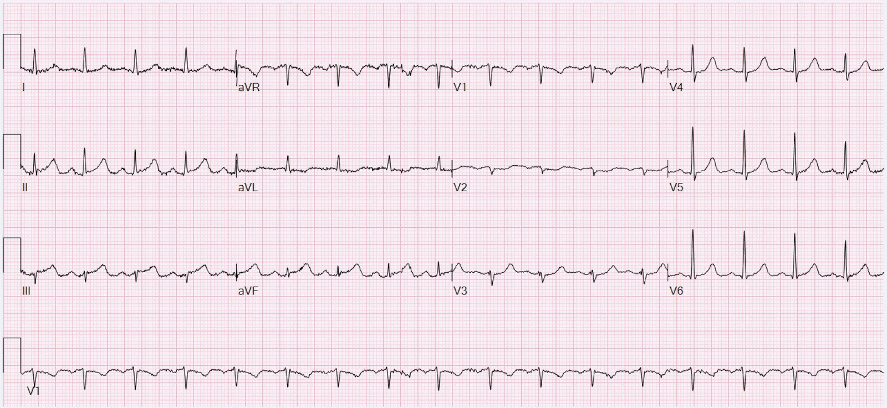
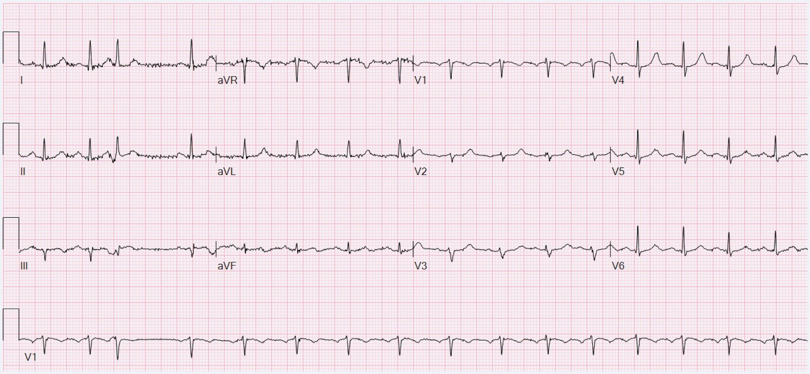
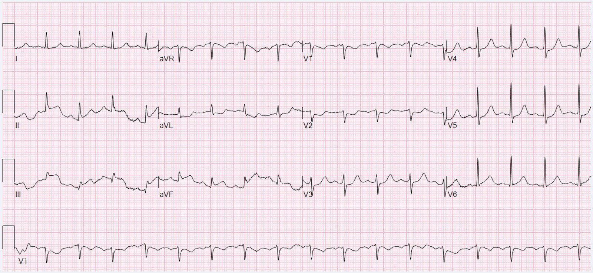
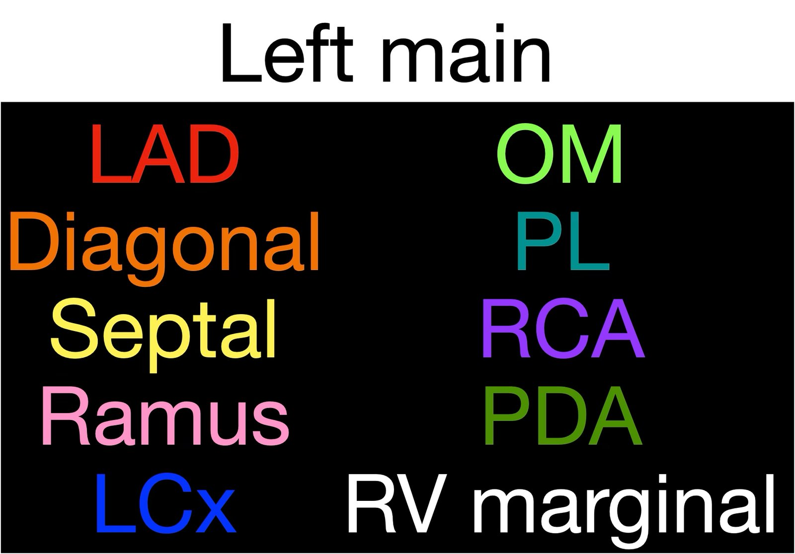
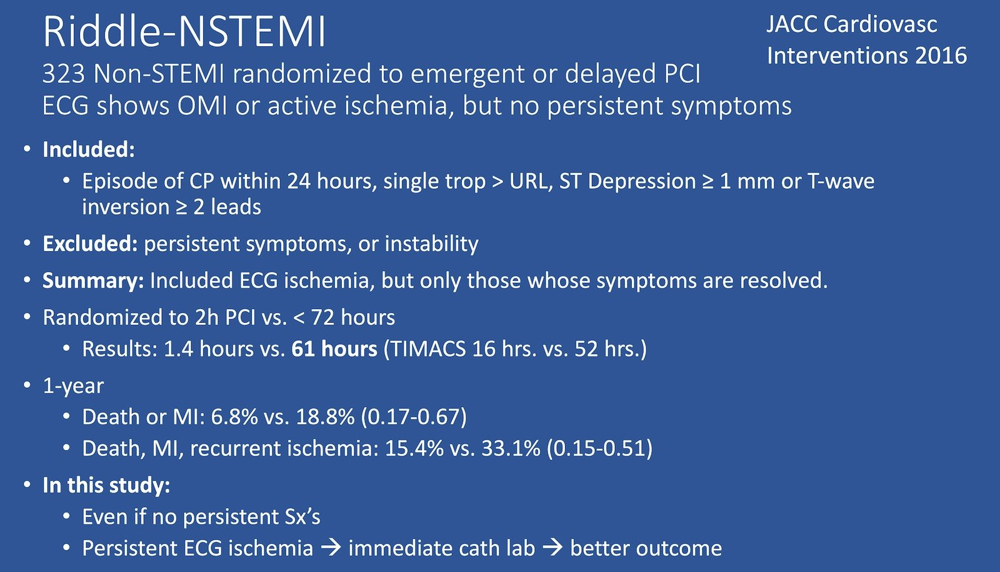
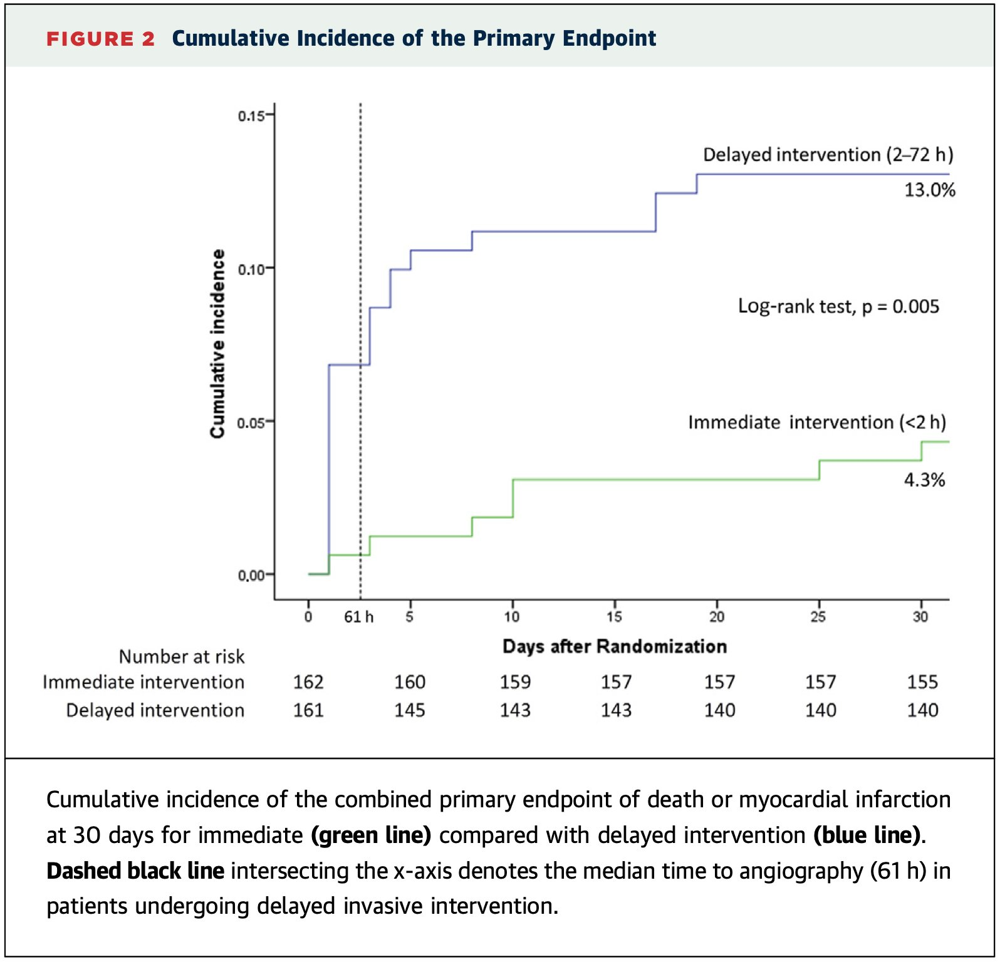
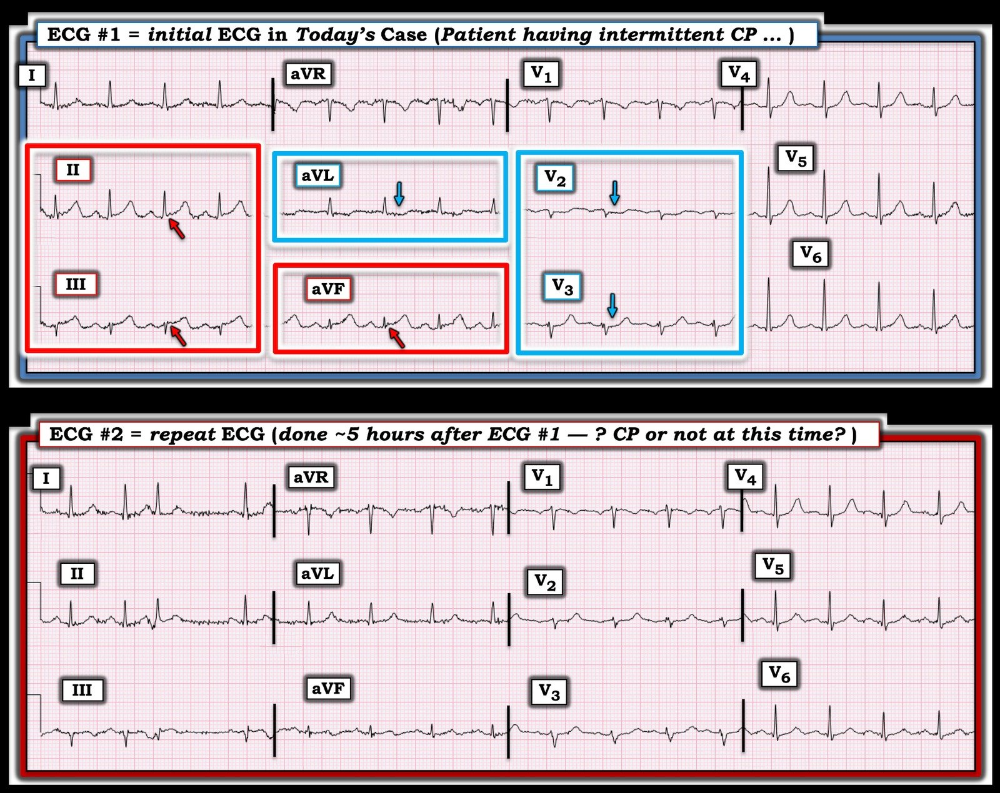

17/03/2025 — Chăm sóc ACS bình thường, mọi thứ đúng sách! Nhưng chăm sóc ACS bình thường có thể tốt hơn nhiều. Bài này giải thích tất cả.
Bản dịch tiếng Việt của bài "Normal ACS care, everything by the book! But normal ACS care could be much better. This post explains everything." – Dr. Smith’s ECG Blog. Giữ nguyên toàn bộ 8 hình ảnh và 1 video của bản gốc.
Tác giả: Willy Frick
Một người đàn ông ngoài 60 tuổi, tiền sử tăng huyết áp và hút thuốc 40 gói-năm, đến khoa cấp cứu vì đau ngực sau xương ức kiểu bỏng rát, từng cơn, kéo dài 1 ngày, lan ra cả hai tay cũng như ra lưng và hàm. Cơn đau diễn tiến ngắt quãng (stuttering), mỗi lần kéo dài 10 phút, kèm vã mồ hôi. Điện tâm đồ ghi lúc khoảng 8 giờ sáng như sau:
Điện tâm đồ 1


Tôi đoán phần lớn độc giả của blog sẽ đưa ra chẩn đoán này mà không gặp quá nhiều khó khăn. Queen of Hearts nhận định đây là OMI với mức độ tin cậy 0.99, gần như tối đa. Cụ thể, chúng ta thấy:
- ST chênh lên (STE) và sóng T tối cấp ở II, III, aVF (một ví dụ hay về sóng T tối cấp (HATW) dạng lõm)
- ST chênh xuống (STD) soi gương ở aVL > I
- STD ở V2 và V3
Dễ dàng chẩn đoán OMI dưới-sau. Troponin I độ nhạy cao (hsTnI) ban đầu là 41 ng/L (tham chiếu: ≤ 35 ng/L). Bệnh nhân được cho aspirin 325 mg và bắt đầu làm các xét nghiệm. Trong lúc chờ chụp X-quang ngực, bệnh nhân nói cơn đau quay trở lại và là cơn đau tồi tệ nhất từ trước tới nay. Không rõ người ta đã làm gì để đáp lại điều này, nếu có. Không dùng thuốc nào. Không ghi lại điện tâm đồ. Troponin được xét nghiệm lại khoảng một giờ sau đó và có xu hướng giảm, từ 41 ng/L xuống 30 ng/L, nay đã nằm trong khoảng tham chiếu.
Hồ sơ ghi chép rất ít ỏi, nhưng điện tâm đồ tiếp theo được ghi lúc khoảng 1 giờ chiều.
Điện tâm đồ 2


Chẩn đoán tái tưới máu vùng dưới-sau. Lúc này chúng ta thấy:
- Sóng T đảo ngược ở III
- Sóng T hai pha ở aVF
- Sóng T dương quá mức soi gương ở I và aVL
- STD ở V2 và V3 ít hơn trước, kèm sóng T tái tưới máu vùng sau
Bệnh nhân được khám bởi khoa tim mạch, chẩn đoán NSTEMI, bắt đầu heparin và lên kế hoạch thông tim trái vào ngày hôm sau. Ghi chú viết rằng điện tâm đồ “không có thay đổi ST.”
Người ta tự hỏi liệu họ đã xem điện tâm đồ nào trong hai bản này chưa.
hsTnI xét nghiệm lại vài giờ sau đó là 568 ng/L (lúc này phản ánh cơn đau ngực dữ dội từ vài giờ trước, rõ ràng là một lần tắc rồi tái tưới máu). Qua đêm, troponin tăng thêm, 1231 ng/L, rồi 2960 ng/L trước khi giảm trở lại.
Khoảng 6:30 sáng hôm sau, bệnh nhân than đau ngực dữ dội và được cho nitroglycerin, có cải thiện nhưng không hết hẳn.
Điện tâm đồ ghi lại tiếp theo mãi đến 8 giờ sáng mới được ghi!
Điện tâm đồ 3


Tắc lại. Lúc này, xuyên qua nhiễu đường nền (mà ta có thể suy ra xuất phát từ điện cực chân trái vì chuyển đạo I không bị ảnh hưởng), chúng ta thấy:
- STE và HATW vùng dưới
- Chênh xuống soi gương ở I và aVL
- STD V1-V5, có lẽ tối đa ở V2-3
- Điểm J đang nâng lên và HATW ở V6
Điện tâm đồ này dương tính với STEMI theo thuật toán máy thông thường, và phòng thông tim (cath lab) được kích hoạt. Hình chụp mạch vành ở dưới. Đầu tiên là chiếu chậm kèm một khung hình dừng có chú thích giải phẫu mạch máu, sau đó ở tốc độ bình thường. Như mọi khi, tôi dùng cùng quy ước màu cho các mạch máu như trong phần còn lại của hướng dẫn chụp mạch vành của tôi.


Như các bạn thấy, tổn thương không mấy ấn tượng trên hình chụp mạch, sẽ bàn thêm ở dưới. Tuy vậy, bác sĩ can thiệp đã làm siêu âm trong lòng mạch và thấy nốt vôi bị trồi lên (erupted calcium nodule), phù hợp với mòn mảng xơ vữa. Siêu âm tim cho thấy giảm động thành dưới. Troponin vẫn đang tăng ở lần kiểm tra cuối, 8928 ng/L.
Bàn luận:
Ca này làm nổi bật nhiều điểm quan trọng đáng bàn luận, chủ yếu vì nó thể hiện cách chăm sóc rất thường quy cho ACS, nhưng có biết bao cách chúng ta có thể cải thiện kết cục bằng những công cụ mình đã có sẵn!
Những hạn chế của dữ liệu sổ bộ (registry):
Bệnh nhân này đến viện với OMI STEMI âm tính (STEMI (-) OMI) và tiến triển thành STEMI vào ngày hôm sau. Thời gian từ điện tâm đồ chẩn đoán đầu tiên (Điện tâm đồ 1) đến bóng là 24 giờ 54 phút. Nhưng thời gian từ điện tâm đồ STEMI (+) đầu tiên đến bóng là 57 phút, và ĐÂY là con số sẽ được ghi nhận để báo cáo cho National Cardiovascular Data Registry (Sổ bộ Dữ liệu Tim mạch Quốc gia) nhằm mục đích cải thiện chất lượng.
Nói cách khác, đây được xem là chăm sóc đạt chỉ số!
Trong thế giới của STEMI, chúng ta không có khả năng nhận ra điện tâm đồ đầu tiên là một âm tính giả. Hậu quả là bệnh nhân bị tái nhồi máu trong khi điều đó hoàn toàn có thể dễ dàng phòng tránh.
Hãy nghĩ đến vô số bệnh nhân tương tự. Hãy nhìn tất cả các nghiên cứu dựa trên dữ liệu này! Làm sao có thể tin tưởng bất kỳ nghiên cứu nào trong số đó khi nó xếp ca này vào loại thành công? Làm sao chúng ta có thể nhận ra những thiếu sót trong mô hình điều trị hiện nay? Làm sao chúng ta có thể ngăn chặn lần tái nhồi máu tiếp theo?
Câu trả lời rất hiển nhiên: tái thông mạch cho các OMI. RIDDLE-NSTEMI đã chứng minh từ nhiều năm trước rằng can thiệp sớm giúp ngăn ngừa tái nhồi máu!
Có lẽ là nhờ quần thể thử nghiệm có tỷ lệ cao các OMI đã tái tưới máu (vì TWI mới xuất hiện là một trong các tiêu chuẩn nhận vào).
Tóm tắt RIDDLE-NSTEMI:




Thử nghiệm RIDDLE-NSTEMI, JACC: Cardiovascular Interventions 2016
Những hạn chế của chụp mạch vành thông thường:
Bệnh nhân này rất may mắn vì bác sĩ tim mạch can thiệp đáp ứng lệnh kích hoạt phòng thông tim là người làm việc dựa trên bằng chứng và chu đáo. Một phân tích gộp gần đây của Stone và cs. cho thấy việc dùng hình ảnh học trong lòng mạch (siêu âm trong lòng mạch [IVUS] hoặc chụp cắt lớp quang học [OCT]) làm giảm 25% tử vong do mọi nguyên nhân so với can thiệp hướng dẫn bằng chụp mạch.
Hãy tưởng tượng một tình huống giả định trong đó bệnh nhân của ca này có một tổn thương LCx nặng, ổn định. Điều này RẤT DỄ dẫn đến PCI nhầm mạch, vốn xảy ra rất thường xuyên. Thực tế, nghiên cứu đáng kinh ngạc này của Heiter và cs. cho thấy PCI nhầm mạch xảy ra ở hơn 1 trên 4 bệnh nhân NSTEMI!
Một phát hiện gây sốc. Hãy xem bài đăng gần đây của Hans.
Đây là lý do vì sao chụp mạch vành không bao giờ có thể đóng vai trò tiêu chuẩn vàng để chẩn đoán OMI. Báo cáo cuối cùng ở bệnh nhân này ghi RCA hẹp 60-70%, điều mà tôi cho là hào phóng và nhiều người có thể gọi đây là 50%. Đó là vì chụp mạch vành thông thường vốn có những hạn chế cố hữu, thậm chí vượt ngoài sự khác biệt giữa những người đọc. OMI là một quá trình động, và hiểu được hình chụp mạch đòi hỏi bối cảnh lâm sàng, điện tâm đồ, siêu âm tim, hình ảnh học trong lòng mạch, và đôi khi cả hình ảnh học tiên tiến hơn như MRI hay CT.
Có ai nghĩ rằng đây là một STEMI “dương tính giả” vì mạch máu đang thông không? Không! Chẩn đoán cuối cùng trong hồ sơ do bác sĩ tim mạch can thiệp đưa ra là STEMI.
Thực tế, trong 33% các ca mà ai cũng gọi là “STEMI”, động mạch đang thông; trong 20%, động mạch có dòng chảy TIMI-3 (hoàn hảo).
Nhưng giờ hãy tưởng tượng không có điện tâm đồ nào đạt tiêu chuẩn STEMI (điều sẽ xảy ra nếu bệnh nhân không bị tắc lại). Những người phản đối sẽ gọi những người đọc theo OMI là kẻ gây hoang mang, chỉ vào dòng chảy TIMI 3 như bằng chứng rằng chăm sóc trì hoãn là an toàn, và nói rằng đây vốn dĩ sẽ không bao giờ là một ổ nhồi máu lớn.
Những hạn chế của troponin:
Bệnh nhân này đến viện với troponin tăng rất nhẹ rồi giảm về khoảng bình thường, khiến các bác sĩ lâm sàng yên tâm một cách sai lầm. Điều này có lẽ là do chỉ có một lần tắc rất ngắn gây ra các triệu chứng lúc nhập viện trước khi bệnh nhân tái tưới máu tự phát. Diễn biến theo thời gian như sau:
- Tắc ngắn kèm tái tưới máu tự phát trước khi đến viện
- Troponin ban đầu 41 ng/L và giảm về trong khoảng tham chiếu
- Tắc lại vào khoảng 9 giờ sáng (bệnh nhân báo cơn đau tồi tệ nhất đời mình) kèm tái tưới máu tự phát
- Troponin mãi đến nửa đêm mới đạt đỉnh, 2960 ng/L
- Tắc lại vào sáng hôm sau lúc 6 giờ, với STEMI và kích hoạt phòng thông tim
- Troponin xét nghiệm lại lúc đó thực ra đã giảm xuống 1965 ng/L và tăng lên 8928 ng/L 24 giờ sau, phản ánh tổn thương do tái nhồi máu
Troponin có ích, nhưng nó đứng sau bệnh sử, điện tâm đồ và siêu âm tim trong bối cảnh tối cấp.
Những hạn chế của STEMI:
Vì TIMACS, giới tim mạch tin chắc rằng trì hoãn can thiệp trong NSTEMI là an toàn. Blog này đã viết rất đầy đủ về lý do vì sao đó là một cách hiểu sai lầm. Cụ thể, TIMACS so sánh can thiệp lúc 16 giờ với can thiệp lúc 52 giờ, nhưng phần lớn cơ tim có thể cứu vớt đã bị nhồi máu trong vòng 6 giờ.
Tại sao lại có người kỳ vọng tìm thấy khác biệt khi so sánh hai can thiệp mà cả hai đều diễn ra sau khi ổ nhồi máu đã hoàn tất? Một khi ngôi nhà đã cháy rụi, việc đội cứu hỏa dội nước vào nó sau 12 giờ so với sau vài ngày thì có ích gì không?
Đó là hạn chế của STEMI. Mặc dù các hướng dẫn nói rằng bệnh nhân có đặc điểm nguy cơ cao, đau thắt ngực kháng trị, bất ổn định, v.v. nên được chụp mạch vành ngay lập tức, điều đó hầu như không bao giờ xảy ra. Thực tế là chưa tới 1 trên 15.
Ai có thể lập luận rằng chờ đợi mới tái thông mạch cho bệnh nhân này là một ý hay? Ai thực sự tin rằng phần cơ tim đã bị nhồi máu là không quan trọng? Làm sao một bệnh nhân lại bị để cho nhồi máu thành dưới ngay trong một cơ sở có khả năng thông tim, trong khi đang được theo dõi vì một nhồi máu cơ tim đã biết.
Nhưng tất cả những điều này diễn ra hằng ngày ở các phòng thông tim trên khắp thế giới. Đây là một ca hoàn toàn dễ bị lãng quên đối với hầu hết các bác sĩ tim mạch. Ca này sẽ không được đưa vào bất kỳ hội nghị bệnh tật & tử vong nào. Bệnh nhân này bị tắc lại vài giờ sau khi đã bắt đầu aspirin và heparin, và chịu một nhồi máu cơ tim trong bệnh viện có thể phòng tránh được 100%.
Những điểm chính:
- Do cách thiết kế, sổ bộ NCDR và các nỗ lực cải thiện chất lượng hiện có bỏ sót một cách có hệ thống những cơ hội để cải thiện
- Can thiệp sớm cứu vớt cơ tim
- Chụp mạch vành có những hạn chế cố hữu và chăm sóc dựa trên bằng chứng đòi hỏi hình ảnh học trong lòng mạch
- Troponin là một xét nghiệm hỗ trợ hữu ích, nhưng bị chậm trễ nhiều giờ

===================================
BÌNH LUẬN CỦA TÔI, bởi KEN GRAUER, MD (17/3/2025):
===================================
Trong ca bệnh đầy gợi mở hôm nay của BS. Frick — những câu hỏi sâu sắc đã được đặt ra mà cộng đồng y khoa cần phải giải quyết.
- BS. Frick phơi bày một loạt lỗi bỏ sót và lỗi hành động nằm sâu trong ngộ nhận đang tiếp diễn của mô hình STEMI lỗi thời, gây hiểu lầm và thiếu chính xác. Cụ thể trong ca hôm nay, như một hệ quả trực tiếp của việc bỏ sót một tắc mạch vành cấp hiển nhiên (một ổ nhồi máu ban đầu STEMI(-) nhưng rõ ràng là OMI(+) ) — việc thông tim kèm PCI cần thiết đã bị trì hoãn hơn một ngày.
- Sự trì hoãn không cần thiết này đã tạo đủ cơ hội để động mạch “thủ phạm” tắc lại, lần này tạo ra một điện tâm đồ STEMI(+) mà cuối cùng đã “giành được” quyền được thông tim và tiến hành PCI. Nhưng vì hồ sơ ghi chép của ca hôm nay sẽ cho thấy PCI được thực hiện chưa tới 1 giờ sau khi đạt tiêu chuẩn STEMI — bộ phận “kiểm soát chất lượng” sẽ coi can thiệp bị trì hoãn không cần thiết này là “chăm sóc xuất sắc”. Trên thực tế — STEMI của bệnh nhân này lẽ ra có thể (lẽ ra phải) được tránh nếu những người chăm sóc ban đầu (kể cả bác sĩ tim mạch hội chẩn ban đầu) chỉ đơn giản là nhận thức và chú ý đến tầm quan trọng của việc nhận ra các nhồi máu STEMI(-)/OMI(+) xứng đáng được thông tim kịp thời với PCI thực hiện sớm nhất có thể.
BS. Frick đặt câu hỏi tiếp, “Làm sao có thể tin tưởng bất kỳ nghiên cứu nào trong số này khi nó xếp ‘khung thời gian trong ca hôm nay’ vào loại thành công? (tức là, khung thời gian mà PCI được thực hiện <1 giờ sau khi đạt tiêu chuẩn STEMI — dù rằng việc này diễn ra hơn 24 giờ sau thời điểm lẽ ra OMI cấp đã phải được chẩn đoán).
- Câu trả lời cho câu hỏi của BS. Frick — là các nghiên cứu hiện nay do những người ủng hộ mô hình STEMI lỗi thời thực hiện là không thể tin tưởng được. Các nghiên cứu về xử trí tối ưu nhồi máu cơ tim cấp không nên được tin tưởng cho đến khi phần lớn cộng đồng y khoa (và tim mạch) cuối cùng chấp nhận rằng nhiều tắc mạch vành cấp bị bỏ sót bởi mô hình STEMI lỗi thời (và ngay cả khi đạt tiêu chuẩn STEMI, như cuối cùng đã xảy ra trong ca hôm nay — việc tuân thủ sai lầm theo tiêu chuẩn STEMI là nguyên nhân gây mất nhiều cơ tim còn sống vì nó quá thường xuyên làm trì hoãn chỉ định thông tim).
Trong số những điều bị bỏ sót …
Xin kể lại chỉ một vài điều bị bỏ sót trong ca hôm nay:
- Như BS. Frick đã nêu – có ST chênh lên ở từng chuyển đạo dưới trên điện tâm đồ ban đầu hôm nay (các mũi tên ĐỎ trong Hình 1). ST chênh xuống soi gương hiện diện rõ ở chuyển đạo aVL. Bất kể mức ST chênh lên “bắt buộc” tính bằng milimét có hiện diện trên điện tâm đồ #1 để đủ điều kiện là “STEMI” hay không — OMI thành dưới cấp được xác nhận ở người đàn ông khoảng 60 tuổi nguy cơ cao này với CP (Chest Pain – đau ngực) mới xuất hiện, dựa vào hình dạng ST-T ở 4 chuyển đạo chi này.
- OMI thành sau cấp cũng hiện diện rõ trên điện tâm đồ #1 qua ST chênh xuống bất thường hiển nhiên ở các chuyển đạo V2,V3. Lệnh kích hoạt phòng thông tim lẽ ra phải được đưa ra trong vòng vài phút sau khi xem điện tâm đồ ban đầu này.
Thay vào đó — phải mất 5 giờ (!) điện tâm đồ trong ca hôm nay mới được ghi lại:
- Nếu có bất kỳ nghi ngờ nào trong đầu những người chăm sóc sau điện tâm đồ ban đầu hôm nay về sự cần thiết phải thông tim kịp thời kèm PCI — điện tâm đồ ghi lại lẽ ra phải được chỉ định trong vòng không quá 10-15 phút sau khi ghi điện tâm đồ ban đầu.
- Thay vào đó — không có điện tâm đồ ghi lại nào trong nhiều giờ (thậm chí cả sau khi cơn CP của bệnh nhân quay lại với cường độ còn dữ dội hơn).
- Ghi chép về mức độ nặng của cơn CP ở bệnh nhân này vẫn “ít ỏi” — không hề có sự đối chiếu mức độ CP với điện tâm đồ ghi lại cuối cùng cũng được thực hiện.
- Tóm lại — Thật khó hình dung làm thế nào bác sĩ tim mạch hội chẩn ban đầu lại có thể so sánh 2 điện tâm đồ đầu tiên được trình bày trong Hình 1 — và diễn giải 2 bản ghi này là “không có thay đổi ST” — rồi đánh giá ca bệnh là “NSTEMI” không cần thông tim cho đến ngày hôm sau. (Như BS. Frick đã nêu — so sánh điện tâm đồ #2 với điện tâm đồ #1 cho thấy rõ sóng T tối cấp ở các chuyển đạo dưới đã xẹp xuống, với sóng T tái tưới máu nay hiện diện trên điện tâm đồ #2 dưới dạng sóng T đảo ngược ở các chuyển đạo III, aVF — và đoạn ST nay đẳng điện với sóng T dương ở chuyển đạo aVL).
- Những sự bỏ sót khác tiếp tục cho đến khi cuối cùng đạt tiêu chuẩn STEMI và thông tim được thực hiện.
ĐIỀU CỐT LÕI: Các diễn biến trong ca hôm nay đòi hỏi phải được xem xét lại và góp ý mang tính xây dựng, cùng với việc suy nghĩ lại thấu đáo về cách tiếp cận lâm sàng. Chúng ta phải làm tốt hơn …

